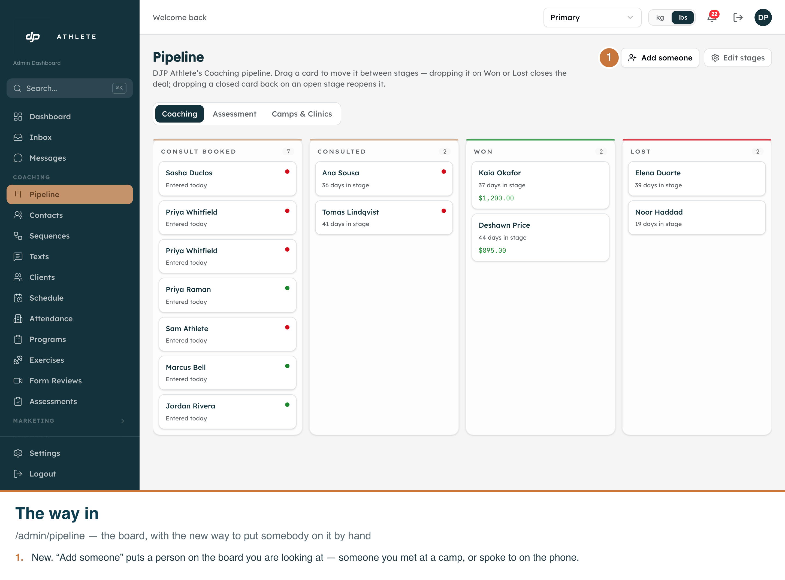
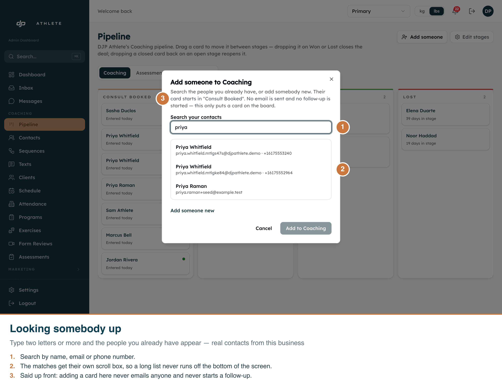
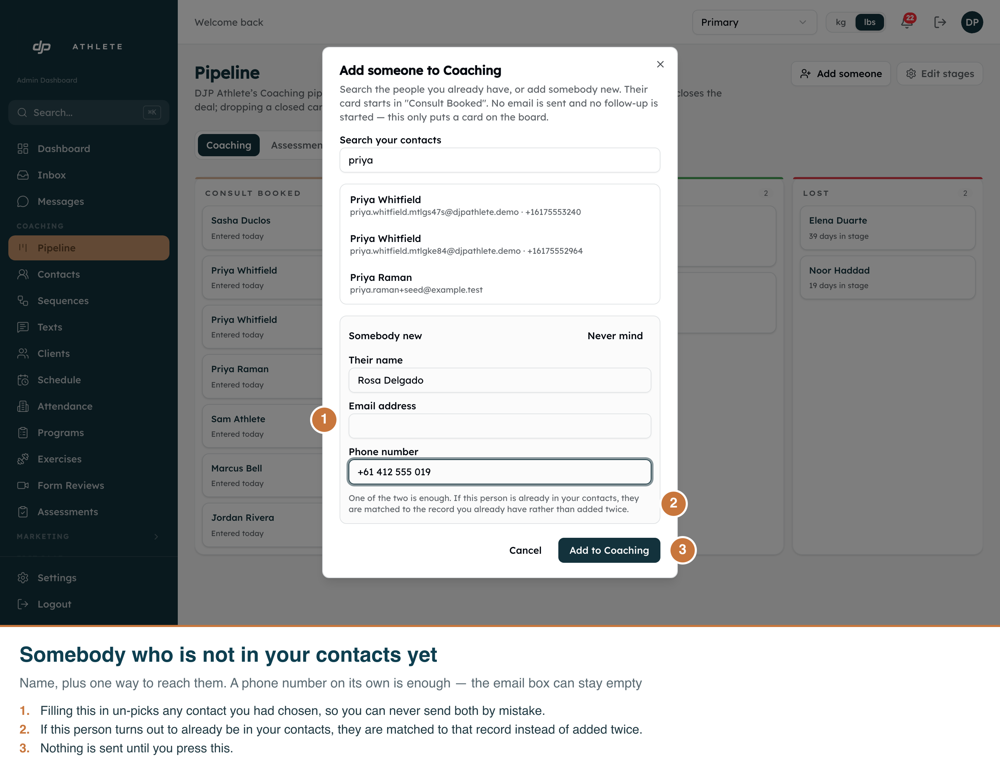
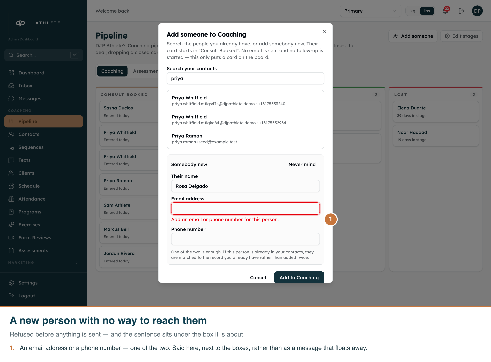
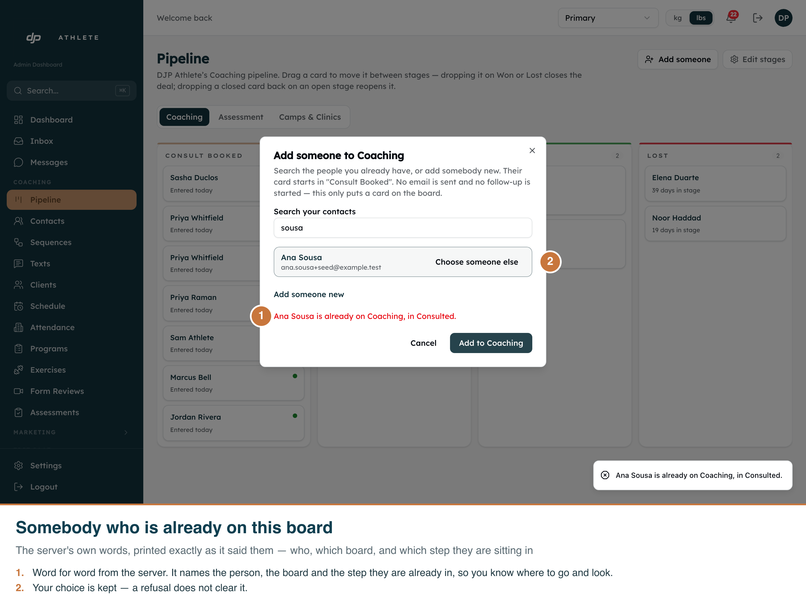

G29 Task 8 · /admin/pipeline · captured 2026-09-22 from the real app on the dev clone,
tenant Primary, board Coaching. Callouts are burned into each PNG —
open any file on its own and it explains itself.
9 open cards on Coaching before and after, and no contact named Rosa
Delgado exists.

00-the-button.png — the board's header. "Add someone" sits beside "Edit stages" and acts on
the board you are looking at, so switching to Assessment or Camps & Clinics first files the card there.

01-searching.png — three real contacts from this business, matched on name, email and phone.
The matches sit in their own scroll box, because the dialog itself caps no height and a full page of
matches would otherwise run off the screen. The opening sentence names the step the card will land in
("Consult Booked" — read from this board, not hard-coded) and promises no email and no follow-up.

02-somebody-new.png — name plus one way to reach them. A phone number on its own is enough;
the empty email box is left out of the request entirely rather than sent as an empty value, which the
server would refuse. Opening this block un-picks any contact that was chosen, so the two can never both
be sent.

03-needs-a-way-to-reach-them.png — refused in the browser, before anything is sent, and the
sentence sits under the boxes it is about rather than floating away as a toast. It is the same wording
the server answers with, so a coach who reaches the server some other way reads identical words.

04-already-on-the-board.png — the server's own sentence, printed word for word:
"Ana Sousa is already on Coaching, in Consulted." It names the person, the board and the step,
so the coach knows where to go and look. The chosen contact is kept — a refusal does not throw the
coach's work away.
| Shot | Claim | Status |
|---|---|---|
| 00 | The button is on the real board page, for the board being looked at | shown |
| 01 | The search reaches real contacts through GET /api/admin/contacts | shown |
| 01 | The result list has its own scroll box | shown |
| 01 | The first step is named from the board, not hard-coded ("Consult Booked") | shown |
| 02 | A new person needs a name and only one way to reach them | shown |
| 03 | Neither email nor phone is refused in the browser, under the box | shown |
| 04 | The duplicate refusal is displayed verbatim, not swallowed | shown |
| 04 | A refusal keeps the chosen contact | shown |
| — | A hand-made card never enrols anybody in a sequence | enforced in the DAL; stated on screen, not visible as a picture |
npx next dev --port 3072 then
node scripts/capture-new-card-dialog-screenshots.mjs. The script refuses to run against
anything but the dev clone, and refuses to run at all if Ana Sousa's card has gone.